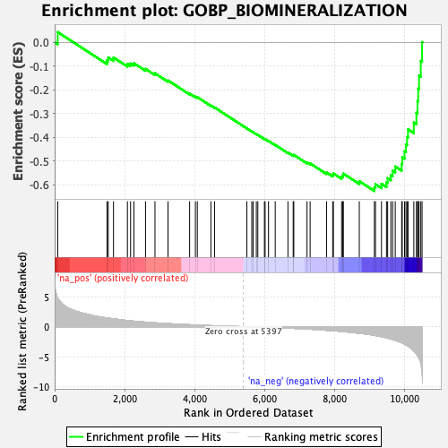
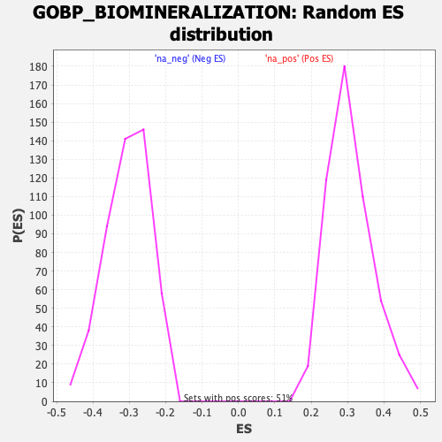

| Dataset | qlf.KOd4vsWTd4_gsea_score |
| Phenotype | NoPhenotypeAvailable |
| Upregulated in class | na_neg |
| GeneSet | GOBP_BIOMINERALIZATION |
| Enrichment Score (ES) | -0.62551033 |
| Normalized Enrichment Score (NES) | -2.0597284 |
| Nominal p-value | 0.0 |
| FDR q-value | 0.0051099057 |
| FWER p-Value | 0.022 |

| SYMBOL | RANK IN GENE LIST | RANK METRIC SCORE | RUNNING ES | CORE ENRICHMENT | |
|---|---|---|---|---|---|
| 1 | FGR | 88 | 4.757 | 0.0429 | No |
| 2 | TMEM38B | 1496 | 1.457 | -0.0760 | No |
| 3 | BCOR | 1531 | 1.426 | -0.0639 | No |
| 4 | BMP7 | 1681 | 1.313 | -0.0640 | No |
| 5 | ATF4 | 2079 | 1.020 | -0.0910 | No |
| 6 | ROCK2 | 2169 | 0.974 | -0.0890 | No |
| 7 | TGFB1 | 2265 | 0.915 | -0.0882 | No |
| 8 | ERCC2 | 2596 | 0.759 | -0.1116 | No |
| 9 | BMPR2 | 2866 | 0.643 | -0.1304 | No |
| 10 | GATA1 | 3239 | 0.514 | -0.1605 | No |
| 11 | MINPP1 | 3856 | 0.328 | -0.2159 | No |
| 12 | FBXO5 | 4021 | 0.283 | -0.2285 | No |
| 13 | TUFT1 | 4075 | 0.270 | -0.2307 | No |
| 14 | TXLNG | 4464 | 0.177 | -0.2659 | No |
| 15 | HEY1 | 4568 | 0.150 | -0.2741 | No |
| 16 | TCIRG1 | 5492 | -0.014 | -0.3623 | No |
| 17 | ITGB1BP1 | 5632 | -0.036 | -0.3752 | No |
| 18 | ZMPSTE24 | 5672 | -0.042 | -0.3785 | No |
| 19 | LTF | 5762 | -0.059 | -0.3864 | No |
| 20 | ENPP1 | 5805 | -0.065 | -0.3897 | No |
| 21 | SLC20A1 | 5993 | -0.096 | -0.4066 | No |
| 22 | CNNM4 | 6013 | -0.099 | -0.4073 | No |
| 23 | SBDS | 6110 | -0.116 | -0.4152 | No |
| 24 | ZBTB40 | 6302 | -0.154 | -0.4318 | No |
| 25 | ATRAID | 6665 | -0.241 | -0.4639 | No |
| 26 | EIF2AK3 | 6815 | -0.279 | -0.4751 | No |
| 27 | SNX10 | 6833 | -0.283 | -0.4737 | No |
| 28 | TMEM119 | 7210 | -0.388 | -0.5055 | No |
| 29 | TFIP11 | 7299 | -0.418 | -0.5094 | No |
| 30 | FBXL15 | 7768 | -0.600 | -0.5477 | No |
| 31 | GPM6B | 7944 | -0.672 | -0.5572 | No |
| 32 | ROCK1 | 7964 | -0.679 | -0.5517 | No |
| 33 | IFT80 | 8199 | -0.788 | -0.5656 | No |
| 34 | ATG4B | 8232 | -0.809 | -0.5600 | No |
| 35 | ACVR2A | 8248 | -0.816 | -0.5526 | No |
| 36 | KLF10 | 8704 | -1.091 | -0.5844 | No |
| 37 | BMP2K | 9135 | -1.438 | -0.6100 | Yes |
| 38 | TRPM4 | 9166 | -1.476 | -0.5970 | Yes |
| 39 | SLC4A2 | 9338 | -1.657 | -0.5955 | Yes |
| 40 | ISG15 | 9481 | -1.846 | -0.5891 | Yes |
| 41 | NBR1 | 9514 | -1.898 | -0.5717 | Yes |
| 42 | ATP2B1 | 9606 | -2.054 | -0.5583 | Yes |
| 43 | ADRB2 | 9657 | -2.133 | -0.5401 | Yes |
| 44 | PTK2B | 9731 | -2.282 | -0.5225 | Yes |
| 45 | NOTCH1 | 9915 | -2.659 | -0.5113 | Yes |
| 46 | SRGN | 9931 | -2.718 | -0.4835 | Yes |
| 47 | ECM1 | 9997 | -2.902 | -0.4584 | Yes |
| 48 | ANO6 | 10037 | -3.011 | -0.4297 | Yes |
| 49 | AXIN2 | 10069 | -3.162 | -0.3985 | Yes |
| 50 | SMAD3 | 10096 | -3.244 | -0.3660 | Yes |
| 51 | FAM20A | 10262 | -4.088 | -0.3378 | Yes |
| 52 | STIM1 | 10336 | -4.547 | -0.2957 | Yes |
| 53 | HIF1A | 10367 | -4.786 | -0.2470 | Yes |
| 54 | SBNO2 | 10387 | -5.016 | -0.1947 | Yes |
| 55 | P2RX7 | 10411 | -5.252 | -0.1403 | Yes |
| 56 | TGFB3 | 10461 | -6.164 | -0.0785 | Yes |
| 57 | S1PR1 | 10497 | -7.694 | 0.0011 | Yes |
